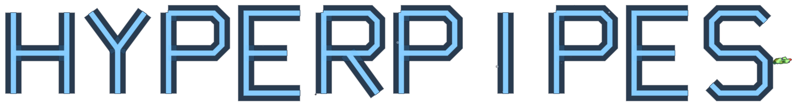

▶
Boost
A surge of speed on top of anything your meter is doing. Scaled by
your position: longer when you are behind, trimmed when you lead.

Pipe racing is simple to describe and awkward to do. This handbook covers the awkward part first, then the machinery around it.
There is a tutorial on the main menu, in the footer. It runs about four minutes, times nothing, and can be left at any point. It begins with the pipe's gravity switched off so you can fly a full circle around the tube and see what you are actually standing on. That ten seconds does more than this chapter will.
Everything in this handbook applies whether you take it or not.
A pipe circuit is a closed tube suspended across open country. You do not race through it. You race on the outside of it.
Your craft holds the outer surface of the tube. It is not magnetised and it is not clamped — it is held there by speed and by you. Whichever face of the pipe happens to be turned toward the ground will try to take you with it, and it does not stop trying.
The correction is small and constant. Riders who fight it in large movements spend the race sliding between the nine and three o'clock positions and wondering why they are slow. Hold the top, make small inputs, and let the pipe do the rest.
This catches everyone. In every other racing game, leaving the road ends your lap. Here it does not. Sliding down the side of the pipe costs you time and nothing else, and you can climb back up from anywhere on the circumference — including from directly underneath.
Riders who understand this get faster quickly, because they stop braking out of fear. Riders who do not spend the whole race in the top thirty degrees, tense, and slow.
Once holding the top is automatic, the circumference becomes a tool rather than a threat. A craft that drops deliberately onto the inside of a bend takes a shorter line through it. A craft that swings wide around the outside carries more speed out. Neither is free — you are fighting the pull the whole way — but both are faster than the timid line for a rider who can hold them.
This is the technique that separates a finisher from a winner, and it is the only one this handbook will insist on.
Circuits are built rather than drawn: every one is generated from a seed number, and the same seed always builds the same pipe. Championship circuits have fixed seeds, so the twenty-four races are twenty-four recognisable places, and a lap you learn stays learned.
| Straights | The top lane barely moves. Take the tightest line you can hold and spend boost here. |
| Bends | The pipe banks. The top lane slides around the tube under you — steer with it before it takes you. |
| Climbs & drops | The horizon lies. What looks like a wall is usually a shallow rise on a pipe that has rolled. |
| Corkscrews | Later circuits fold the tube through full loops. The top lane rotates continuously. Commit early and keep the input constant. |
Races run a set number of laps, shown on the readout. The line is a checkered band across the pipe, and it is visible on the minimap as well, so you know when the last lap is coming before you are told.
Your best lap and best full race on every championship circuit are kept. So is a ghost — a silent echo of your quickest run, which will race you next time you visit. It cannot be collided with and it does not score. It is there to be beaten.
Everything below is the factory binding. All of it can be changed in Settings › Keybindings. Analogue stick and trigger inputs are fixed.
| Action | Keyboard | Xbox | PlayStation |
|---|---|---|---|
| Accelerate | W · UP | RT | R2 |
| Brake | S · DOWN | B · LT | CIRCLE · L2 |
| Steer Left | A · LEFT | Left Stick | Left Stick |
| Steer Right | D · RIGHT | Left Stick | Left Stick |
| Boost | SHIFT | Y | TRIANGLE |
| Fire | SPACE | A · RB | CROSS · R1 |
| Use Item | X | X | SQUARE |
| Target Next | E | LB | L1 |
| Target Prev | Q | — | — |
| Camera View | C | SELECT | SHARE |
| Pause | ESCAPE · P | START | OPTIONS |
| Action | Keyboard | Xbox | PlayStation |
|---|---|---|---|
| Screenshot | F2 | R3 | R3 |
| Hide HUD | H | — | — |
| Radio Next | PERIOD | DPAD ▲ | DPAD ▲ |
| Radio Prev | COMMA | DPAD ▼ | DPAD ▼ |
| Music Vol + | APOSTROPHE | DPAD ▶ | DPAD ▶ |
| Music Vol − | SEMICOLON | DPAD ◀ | DPAD ◀ |
| Action | Keyboard | Controller |
|---|---|---|
| Move | Arrows | D-pad / left stick |
| Select | Enter | A / Cross |
| Back | Esc | B / Circle |
Every screen in the game can be driven end to end on a pad. If you find one that cannot, it is a fault and worth reporting.
One bar across the top, one map in the corner. Nothing else moves.
| POS | Your position in the field, live. Ordered on total progress, so it changes the instant somebody actually passes you — not at the line. |
| LAP | Current lap and the total. The caption turns to FINAL and tints on the last one. |
| TIME | The current lap. Below it, when a ghost is loaded, is your gap to it — ahead or behind, in seconds. |
| EARNINGS | What this race has paid so far. Bounty chips land here immediately. The boost meter sits underneath it. |
| ITEM | What is in your slot, by symbol. Empty is a dash. |
| AMMO | Rounds for the cannon. An infinity sign means the format is not counting. |
| KM/H | Ground speed. |
Bottom right. It shows the real shape of the circuit around you, north-up, with every racer on it: you in white, the field in their own colours, your nemesis ringed in red, and your locked target ringed in yellow. The start line is drawn as a checkered band so you can see it coming.
When you are leading, the map quietly widens until second and third fit on it. When the pack is on top of you it tightens again so the small gaps are readable. It can be switched off entirely in Settings.
Above the map: your current lock-on, its distance, and a warning when somebody is closing from behind. The warning blinks when they are within striking distance. There is no radar beyond this and there does not need to be — anything that can hurt you is either ahead of you or on the map.
You always have a boost coming. This is the single most misused system in the sport.
Under EARNINGS is a bar that fills on its own. When it reads BOOST READY, pressing Boost spends the whole thing and empties it, and it begins refilling from nothing.
This is the rule the whole game turns on, and it is the one nobody is told. The meter fills two and a half times faster on the crest of the pipe than it does on the underside, and it slides smoothly between the two as you come round.
Gravity pulls you to the underside, so the bottom of the tube is where you end up if you stop paying attention. It is the easy place to sit and it always was — until this, it also cost nothing. Now it costs you every surge. A rider who lives on the underside finishes every race; they simply never have a boost at the moment they need one.
The bright strip running along the pipe marks the crest. Nothing on the readout announces this rule — you are meant to notice the bar filling faster up top and work out why.
| Setting | On the crest | On the underside |
|---|---|---|
| Easy | about 4 seconds | about 10 seconds |
| Hard | about 11 seconds | about 27 seconds |
On a pipe narrow enough to have no meaningful up side, everybody is treated as being on the crest.
The meter will not begin refilling until the surge you just fired has worn off, so holding the button down achieves nothing. Fire it, let it work, fire it again.
On the exit of a bend rather than into one. Boost adds speed above your ceiling and bleeds away over a couple of seconds; spent into a corner most of it is scrubbed off before it does anything. Spent on the way out, it compounds down the following straight.
The exception is a defensive one. A craft under boost shrugs off obstacle strikes that would otherwise stun it, so a boost spent going into a hazard field is not wasted even if the speed is.
Separate from the meter, and they stack with it. A boost pickup taken from the back of the field lasts noticeably longer than the same pickup taken from the lead — the league scales it deliberately, so a bad start is recoverable and a comfortable lead is not a coronation.
Eight of them. Four fire the moment you touch them; four go into your slot and wait. Knowing which is which is most of the skill.
You may hold one. Driving over a second swaps it for the first, so a full slot is a decision, not a saving. Spend it and it is gone until you find another.
Targets are acquired ahead of you and cycled with the target keys. You cannot fire without a lock, and you cannot lock through a jammer. Rounds fly straight from where they were launched, aimed at where the target was when you pulled — a rider who changes position around the pipe after you fire will usually be missed.
Hits stun briefly and bleed speed. They do not destroy anything. Nobody retires from a pipe race.
Pickups sit at fixed positions around the tube, not just along it. A line of them running down the side of the pipe is an invitation to leave the top lane, and the league places them there on purpose. Decide before you arrive whether the row is worth the altitude, because deciding underneath it means taking neither the pickups nor a good line.
The Magnet upgrade widens the grab radius considerably and turns most near-misses into collections. It is the least glamorous purchase in the garage and one of the most useful.
The circuit is not empty. What is on it depends on the format and on how far into the championship you have come.
| Obstacle | Behaviour |
|---|---|
| Mines | Static, live, and placed on lines you want to use. A strike stuns and costs speed. |
| Rotating gates | Barriers that turn around the pipe. They are timed, not random — watch one for a second and it becomes free. |
| Tail mines | Dropped by other riders. Newer than the scenery and usually exactly where you were about to go. |
| Flame vents | Fixed emitters along the tube. Predictable, and easy to forget while you are looking at the map. |
Run away with a race and the circuit answers. A turning wall of fire is launched up the track to meet you head-on — it is sent to the leader, and only when the leader has built a real gap over second place.
It cannot be dodged. Shoot it. This is the one hazard in the game with a wrong instinct attached: everything else here is avoided, and this is the only thing you have to turn and fight. It takes two hits on the gentlest INTENSITY and five on the hardest.
The edges of the screen glow red as it closes. If you are out of ammo when it launches, crates are placed on the track ahead of it — that is a guarantee, not a chance, and catching one of them is enough on its own. An unwinnable hazard would not be difficult, only scripted.
It is never sent on the run to the chequered flag. A wall the finish line interrupts is a loose end rather than a hazard, so if there is not enough circuit left to fight it in, it does not come.
A strike stuns the craft for a moment and bleeds speed. It does not end your race, spin you off the pipe, or reset you. The real cost of a hit is almost never the hit — it is the two seconds afterwards, when you are slow, low on the circumference, and about to be passed by people who were not.
Hull Plating shortens the stun and reduces the speed lost. A craft under boost or shield ignores strikes entirely.
Championship rounds all run Classic rules. The other five formats appear in the Race Lab, where you can put any of them on any circuit.
| Format | Rules | Purse |
|---|---|---|
| Classic race | Full grid, guns, boosts, the lot. The championship standard. | ×1.0 |
| Boost rush | Every pickup on the circuit is a boost, and there are twice as many. Fewer obstacles. Pure speed. | ×1.0 |
| Gun run | You start with a full clip of eight, ammo is everywhere, and the field shoots on sight — twice as readily as normal. | ×1.1 |
| Pacifist run | No weapons for anybody, and nearly twice the obstacles to make up for it. Racing lines only. | ×1.0 |
| Hazard gauntlet | A wall of mines and gates, three laps, and only four rivals willing to enter. | ×1.3 |
| Rival duel | You and one other craft. Nobody else on the circuit. The purse reflects it. | ×1.5 |
Races you build yourself pay three quarters of what the equivalent championship round pays. The championship is meant to remain the sensible way to earn. The first time you win each format, however, the league pays a one-off bonus of 2,000 credits — six formats, six bonuses, claimable once per career.
Twenty-four circuits across six leagues. Each league is four races, and each is faster than the last.
| League | Pace | Purse | Parts cost |
|---|---|---|---|
| Bronze | ×1.00 | ×1.0 | ×1.0 |
| Silver | ×1.15 | ×1.6 | ×2.0 |
| Gold | ×1.30 | ×2.6 | ×3.5 |
| Platinum | ×1.45 | ×4.2 | ×5.5 |
| Diamond | ×1.60 | ×6.5 | ×8.0 |
| Hyper | ×1.80 | ×10.0 | ×12.0 |
Finishing a round unlocks the next. Moving up a league requires three gold medals from the league you are in — you do not have to gold all four, and the fourth is there for the stubborn.
Every round awards a medal on your total race time, with one condition attached: your finishing position caps what you can earn, however fast you drove.
| Finish | Best medal available |
|---|---|
| 1st | Gold, if the time is quick enough |
| 2nd – 3rd | Silver at most |
| 4th and back | Bronze at most |
A quick lap in fifth place is still fifth place. The league is not interested in your pace if you were not at the front.
Every finish pays, scaled by placing and by league. Bounty chips collected on the circuit are added on top, as is the trophy money from any championship cup. It is all spent in one place — the garage.
Four save slots. Money, parts, unlocks, medals, trophies, ghosts and saved circuits all belong to the slot, not to you. A slot can be wiped from the Save Slots menu, and doing so is the only way to start the championship over.
A cup is several rounds run back to back on points. No restarts between them, and no leaving in the middle.
| Cup | Rounds | Opens | 1st | 2nd | 3rd |
|---|---|---|---|---|---|
| Rookie Cup | 3 | race 1 | 4,000 | 2,000 | 1,000 |
| Hyper Cup | 3 | race 5 | 10,000 | 5,000 | 2,500 |
| Storm Cup | 3 | race 9 | 18,000 | 9,000 | 4,500 |
| Grand Prix | 6 | race 12 | 40,000 | 20,000 | 10,000 |
Awarded per round to the top eight, and carried across the cup:
| Place | 1st | 2nd | 3rd | 4th | 5th | 6th | 7th | 8th |
|---|---|---|---|---|---|---|---|---|
| Points | 10 | 8 | 6 | 5 | 4 | 3 | 2 | 1 |
The spread is deliberately shallow behind the podium. A cup is rarely won by a single victory and is frequently lost by a single bad round, so the arithmetic rewards finishing every race respectably over winning two and scattering the rest.
One ladder, a new one every week, the same for everybody who races it. It ends when you are beaten.
You start at stage one and keep going. Every stage is a fresh circuit with its own theme, layout and rules, and every stage is harder than the one before. Miss the required finishing position and the run is over — there is no retry, and the next attempt starts again at stage one.
| Stages | You must finish |
|---|---|
| 1 – 12 | On the podium — third or better |
| 13 – 24 | Second or better |
| 25 and beyond | First. Nothing else counts |
The circuits escalate alongside the bar. Corkscrews start appearing from stage four, and the layout library opens up to twists and pretzels from stage seven. By the time the ladder demands a win, it is also handing you the strangest pipes the generator can build.
Your score is distance covered, not stages cleared and not time. Every metre counts, including the metres of the race you eventually lost, so there is no such thing as a wasted final stage — push to the last corner of a race you know you have lost, because it is still adding to the number.
Two records are kept: your best on this week's ladder, and your best of all time across every week. The weekly one resets on Monday. The all-time one never does.
One circuit, generated from the date, identical for every player in the world that day. Your best time stands until midnight, when it is replaced by a new circuit and the board starts again.
Like Tour, the daily runs stock craft — garage parts are ignored. A board where the fastest time belonged to whoever had spent the most money would rank wallets rather than driving, and a player on their first day could never touch it.
Where you build circuits. Every dial is independent and the result is reproducible: the same settings always build the same pipe.
These are the ten dials, in the order the rail stacks them. SEED sits above them and is not one of the ten.
| Seed | The number the circuit is grown from. Roll it, or type one in. |
| Where | The place the pipe is built through — ground, sky, space or canyon. |
| Sky | The weather and light overhead. Cosmetic, and it changes the whole mood of a circuit. |
| Race type | Any of the six from chapter 07. |
| Intensity | How hard the field races and how much is on the circuit. |
| Pipe | Tube width — normal, wide or ultra. A wider pipe is a more forgiving surface. |
| Track | Classic, stunt, crazy or weird — how far the layout is allowed to go. |
| Twists | Permits corkscrews and pretzels in the layout. |
| Colour | The pipe's livery, or automatic. |
| Finish | The pipe's surface — grid, chrome or satin. |
| Laps | Exact lap count, or leave it to the format. |
Circuits worth keeping go into My Tracks, which holds eight and belongs to the career slot that built them. Saved circuits can be strung together into a Lab Grand Prix — four cups' worth — and run as a championship of your own design.
Every circuit has a track code: sixteen characters carrying the seed and every dial, so what somebody loads is what you built. The small button at the left of the NEW TRACK row copies it to your clipboard. Type one character wrong and it is refused outright rather than quietly building a different circuit.
Six parts, bought in tiers. Parts are held per class, so moving up a league means starting that league's build from scratch.
| Part | What it does |
|---|---|
| Engine | Raises top speed. The later leagues field AI you cannot out-cruise on a stock engine, so this is not optional forever. |
| Thrusters | Harder acceleration off the line and back up to pace after a strike. |
| Stabilizers | More steering authority around the circumference. The float remains — you simply get more say in it. |
| Hull plating | Strikes sting less: shorter stun, less speed bled while it lasts. |
| Magnet | Pickups near your line snap to the craft. Turns near-misses into collections. |
| Shock coil | Widens the shock pickup's detonation, in both directions along the pipe. |
Stabilizers, then Engine. Steering authority makes every other system on the craft usable, and a rider who can hold the line they intended will beat a faster rider who cannot. Engine matters from Gold league onward, when the field's pace starts to outrun a stock car.
Hull Plating is worth buying in the formats that deserve it — Hazard Gauntlet and Pacifist Run, where the circuit is the opponent.
Five hulls are available across the championship. They are appearance only: no hull is faster than another, and the parts you have bought apply whichever you are flying. Pick the one you like looking at from behind, because you will be looking at it for a long time.
| Pipe Runner | The one that started it all. |
| Craft Racer | Factory team chassis. Looks fast standing still. |
| Speeder B | Slim profile, all engine. |
| Speeder C | Twin-hull stability for the crazy pipes. |
| Speeder D | The collector's flagship. |
Settings carries a Colours option with three correction modes — Red-Green 1, Red-Green 2 and Blue-Yellow — which shift the whole picture so on-screen colours are easier to tell apart. It is off by default and applies everywhere, including menus and the map.
Every control is rebindable. The minimap can be switched off for riders who would rather read the pipe than a map. The frame rate can be capped.
Screenshot grabs exactly what is on screen and writes a PNG to your Pictures folder, under Pictures/HyperPipes. The folder can be opened from Settings › Photos at any time.
Hide HUD blanks the entire readout during a race or a replay for a clean shot. A large FINAL LAP callout still flashes through it, so you do not lose track of the race while taking pictures of it. Steam's own screenshot key continues to work alongside this.
Your quickest run on a circuit is recorded and raced back at you next time you visit. Ghosts cannot be collided with, do not score, and are drawn deliberately dimmer than a live rival so they are never mistaken for one. The delta to your ghost sits under the lap clock. Ghosts can be switched off in Settings.
The in-race radio cycles with the radio keys. Cycling past the last track switches it off. Music and effect volumes are separate sliders, and the music volume can also be trimmed mid-race without pausing.
Everything above is regulation. What follows is advice, and it is the part that will actually make you quicker.
The craft floats. Every correction you make arrives slightly after you make it, and the usual beginner's mistake is to correct again before the first one has landed. That is what produces the slow oscillation from one side of the pipe to the other. Input once, wait, then judge.
Half the circumference is usable and most riders use a third of it. Dropping deliberately into a bend is faster than holding the top through it, and the only thing that makes it feel dangerous is unfamiliarity.
It is refilling whether or not you are using it, and it is the one system the AI field does not have. An unspent meter is not saved — it is wasted, because it stopped refilling the moment it filled.
Positions are won and lost against the rider immediately ahead and the one immediately behind. Rounds spent on the leader from sixth are rounds not spent on the person actually taking your place.
In Tour, the metres still count. In a cup, eighth place is a point, and cups are lost by zeroes rather than won by victories. In the championship, a poor finish still pays and still unlocks the next round.
Do not brake because you feel unsteady. Braking on a pipe reduces the speed holding you against the surface, which makes the craft feel worse, not better, and the instinct to brake harder from there is a spiral. Brake for bends. Everywhere else, steer.
Two ways to use the game that award nothing, unlock nothing and are not part of the championship — which is exactly the point of both.
MULTIPLAYER › SPLIT SCREEN. Two players on one machine. It needs two controllers, or a keyboard and one pad.
Each player claims a side by pressing a button on their own device. The game does not guess: knowing two pads are plugged in is easy, knowing which of them is player one is not, and a pad left in a drawer should not decide anybody's controls.
The screen is split stacked, one player above the other, and that is deliberate rather than a default nobody revisited. This game curves, and you read a pipe by looking down it — splitting side by side halves precisely the view that carries the read. If you prefer side by side anyway, it is in Settings › Split Screen.
Each half is edged in that player's own colour, matching their craft and their badge, so a glance tells you which screen is yours.
Three choices, left to right: a game, a place, and a pipe in it.
FREE FLIGHT is the game that exists today. The others along the top are marked SOON and are the ones being built; they are shown rather than hidden because the screen's job is to be the room they arrive in.
The places are GROUND, SKY, SPACE and CANYON, plus your own MY TRACKS once you have saved any. Each also offers a RANDOM roll — a pipe nobody has flown.
There is no countdown, no rival, no lap counter and no clock, and the boost meter is back the moment the last one wears off. Nothing here is scored, paid or unlocked, which is why every circuit is open from the start, including ones the career has not reached. Flying one here does not unlock it for the career.
Hold the top. Spend the boost. Finish the race.